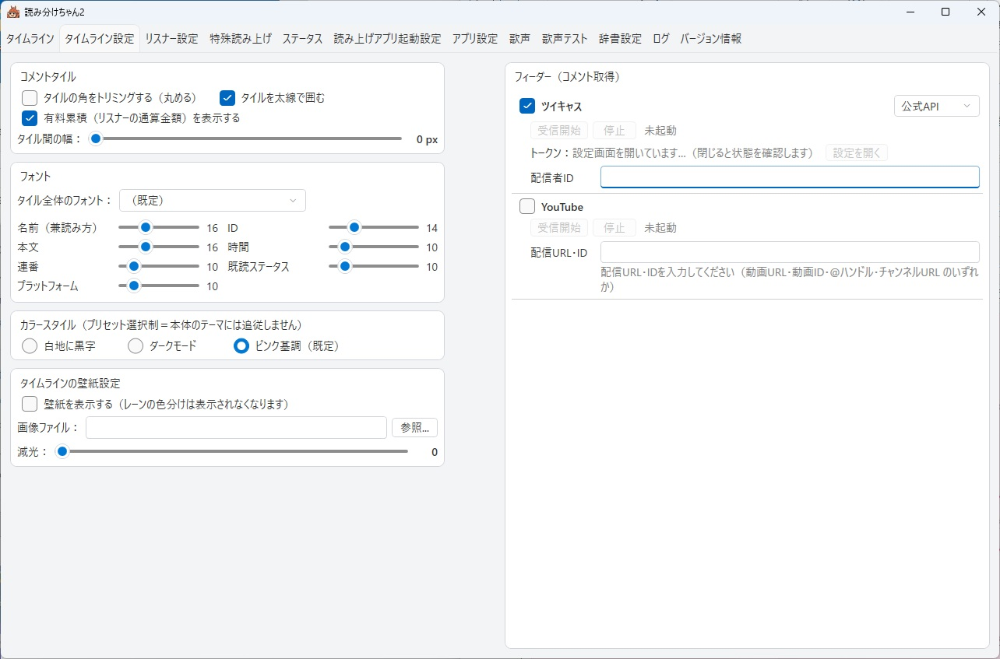
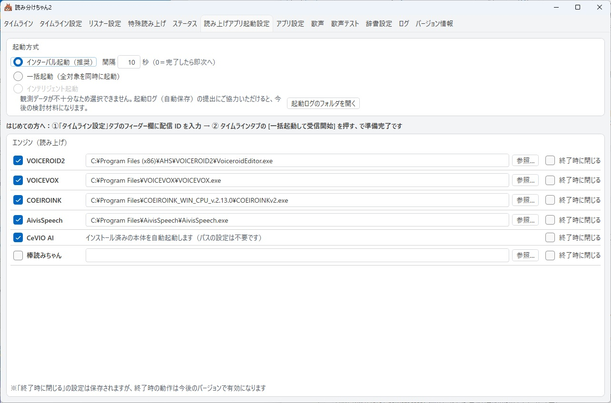
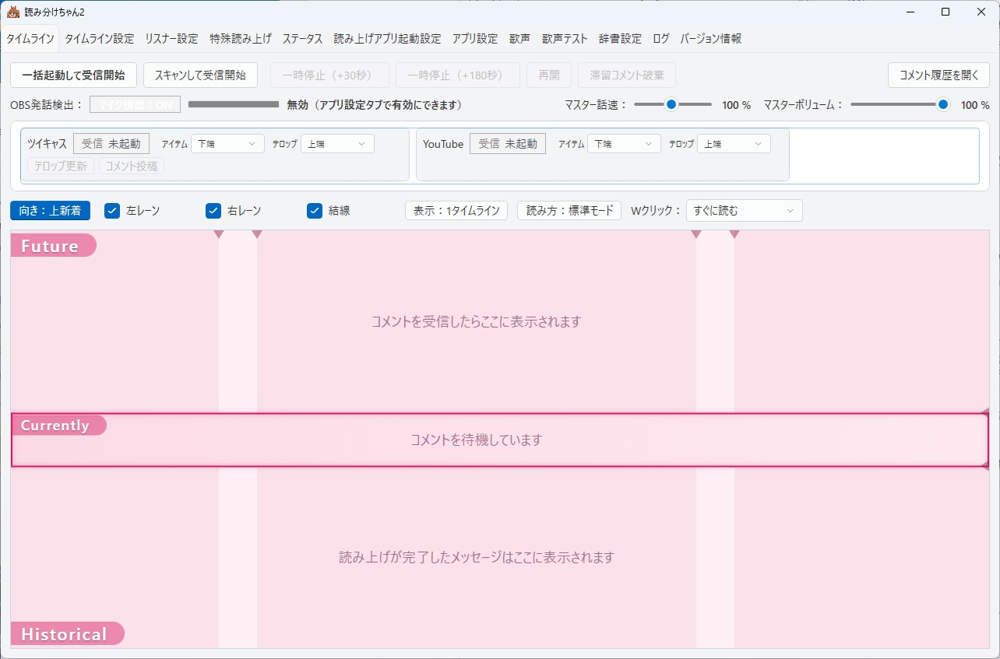
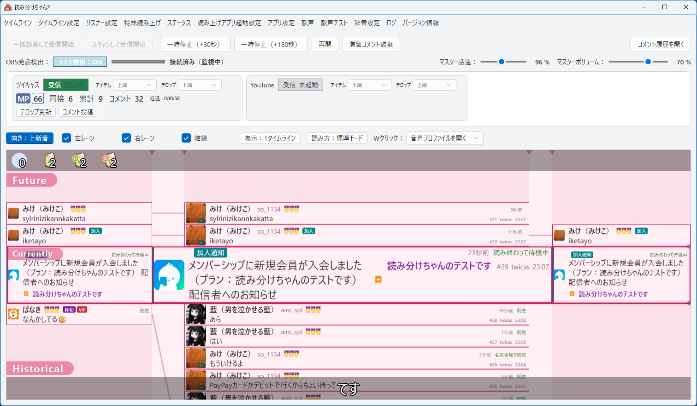
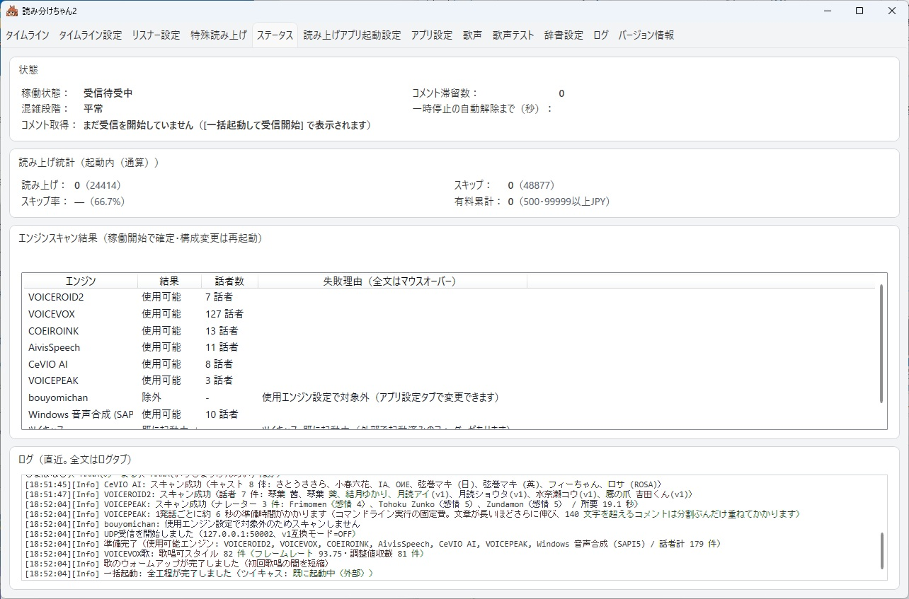
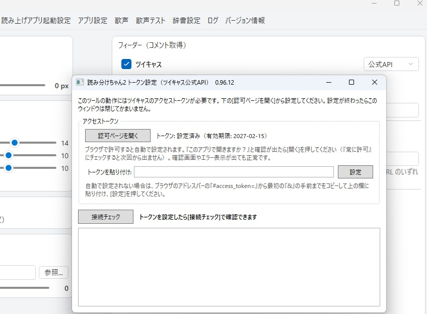
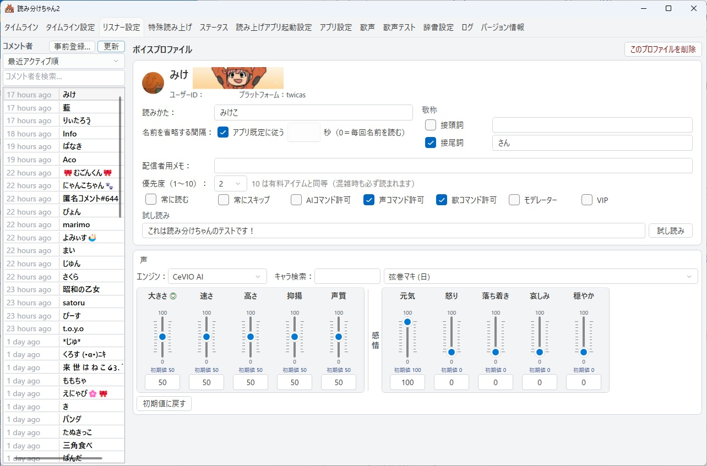
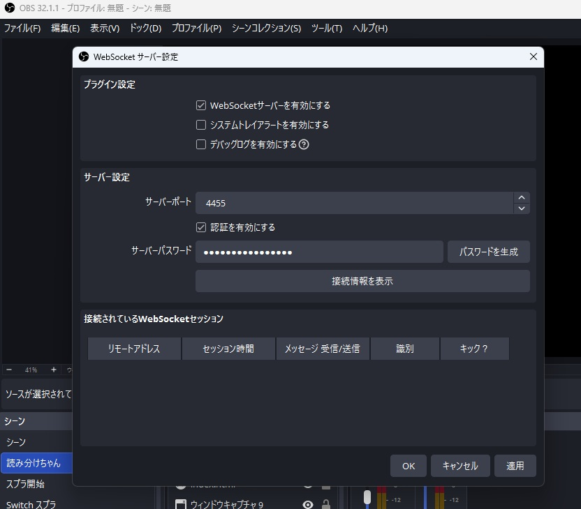
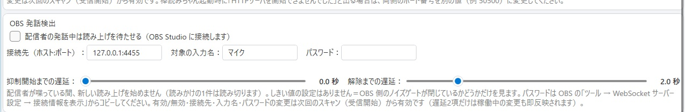
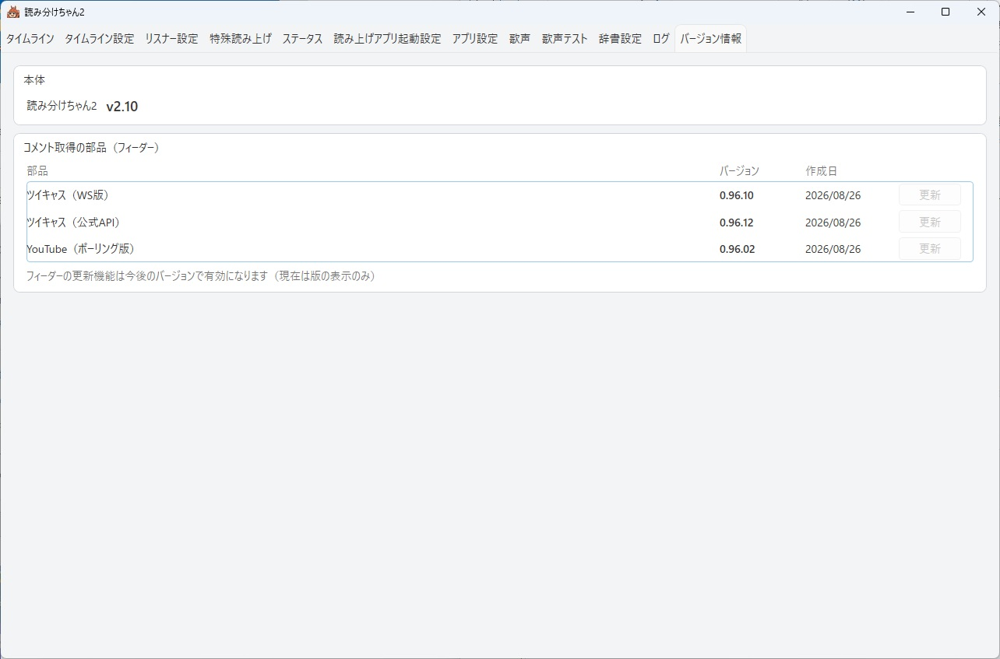

配信で使うまでの手引き
すでにツイキャスなどで配信をしている方向けのガイドです。
このページでは、インストールから最初の配信で使うまでを順に案内します。 途中でつまずいたら、遠慮なく X @yomiwakechan まで。 「分かりにくかった」という報告そのものが宝です。
1. インストール
- VOICEVOX を入れておく（お勧め・無料）
多彩な声とお歌機能をフルに使うには、無料の音声合成ソフト VOICEVOX をお勧めします。 後から入れても構いません（何も入れなくても Windows 標準音声で最低限動きます）。
※ v2.10 から COEIROINK・AivisSpeech・棒読みちゃん（いずれも無料）にも対応しました。 VOICEROID2 / CeVIO AI / VOICEPEAK をお持ちの方はそれも使えます （VOICEPEAK は 1 回しゃべるたびに数秒の待ちが避けられないため、 配信のために新しく購入することはお勧めしません）。 - インストーラをダウンロード
最新版のダウンロードはこちら （yomiwakechan2-setup-v2.10.exe）。 - インストーラを実行
「Windows によって PC が保護されました」の青い画面が出たら、 「詳細情報」→「実行」で進めてください （この警告について詳しく）。 管理者権限は不要で、完了するとデスクトップに「読み分けちゃん2」アイコンができます。
%LOCALAPPDATA%\yomiwakechan2\ などに保存され、
上書きインストールやアンインストールでは消えません。
リスナー（コメント者）ごとのプロファイル・読み上げ辞書・歌フレーズ・実績は、
新しい版に入れ替えてもそのまま引き継がれます。
v2.10 では、アプリ側の設定（接続先・表示・動作などの設定）を引き継がず、 初回起動時の初期設定ウィザードで設定し直す方式になりました。 それまでの設定は自動でバックアップに退避されます（消えるわけではありません）。 リスナーごとの設定は上のとおり引き継がれます。
旧版（v2.00）への入れ戻しはしないでください。 新しい版で保存した設定ファイルを旧版に読ませると、リスナーごとの通算が壊れます。
2. 最初にやること（ツイキャス配信者向け）
- 読み分けちゃん2 を起動する（初回は設定ウィザードが開きます）
v2.10 では、初回起動時に初期設定ウィザードが開きます。画面の案内に沿って、 使う配信プラットフォーム・配信 ID・アクセストークン・読み上げスタイルを設定してください。 ここで設定した内容は、あとから設定タブでいつでも変更できます。
ウィザードを終えると「タイムライン」タブが開きます。ここが本番の画面です。 - ツイキャスは「API 版」がおすすめ
ウィザードでツイキャスを選ぶと、API 版と WS 版のどちらを使うか聞かれます。
【おすすめ】API 版：メンバー限定配信に対応し、テロップの更新やコメント投稿ができます （X〔旧 Twitter〕連携はできません）。利用にはアクセストークンの設定が必要で、 取得の手順はウィザードが案内します（アクセストークンとは何か）。
WS 版：アクセストークンなしで手軽にコメントを受信できます （メンバー限定配信・テロップ更新・コメント投稿には対応しません）。
※ YouTube で使う場合は、動画 URL・動画 ID・@ハンドル・チャンネル URL のいずれかを 入力します。 - 配信 ID とエンジンを確認する（あとから変えるときはここ）
配信者 ID の入力欄（フィーダー欄）は「タイムライン設定」タブにあります （表 ID・c: 付き ID・配信ページの URL、どれを貼っても OK です）。
使う音声エンジン（VOICEVOX など）にチェックが入っているかは 「読み上げアプリ起動設定」タブで確認できます。
「タイムライン設定」タブ。右側のフィーダー欄に配信者 ID を入れます （ツイキャスの右のドロップダウンで公式 API 版／WS 版を切り替えます） 
「読み上げアプリ起動設定」タブ。使うエンジンにチェックを入れておくと、 一括起動でまとめて立ち上がります - タイムラインタブの「一括起動して受信開始」を押す
音声エンジンとコメント取得プログラム（feeder）が、ボタン一つでまとめて立ち上がります。 ログに「準備完了」と出て、使える声の一覧が並べば成功です。
※ feeder の初回起動時にも Windows の警告やファイアウォールの確認が出ることがあります。 許可して進めてください。
待機中のタイムラインタブ。左上の「一括起動して受信開始」が本番のスイッチです - テストコメントで動作確認
配信を開始し、自分のスマホなどからコメントを送ってみてください。 コメントが声になって聞こえたら、準備完了です。 タイムラインにコメントが流れ始め、いま読んでいるコメントが分かるようになります。
※ 読み上げ・スキップ・有料累計などの統計は「ステータス」タブで見られます （v2.00 の「コントロール」タブが改名されたものです）。
稼働中のタイムライン。中央の帯（Currently）が「いま読んでいるところ」で、 その上が未読、下が読み終わったコメントです 
「ステータス」タブ。読み上げ・スキップ・有料累計などの統計、エンジンごとの話者数、 直近のログがひと目で分かります
選択モードは自動では読み上げず、タイムラインから読みたいコメントを選んで読み上げます。 コメントの多い配信や、読むものを自分で選びたいときに。
※ どちらも、あとから「タイムライン」タブでいつでも切り替えられます。
3. ツイキャスのアクセストークンとは
ツイキャスを API 版で使うときだけ必要になるものです （WS 版を選んだ方・YouTube の方は、この章は飛ばして構いません）。
ひとことで言うと
アクセストークンは、ツイキャスが発行する「このアプリに、私のアカウントの範囲で コメントの取得などをさせてよい」という許可証です。 パスワードではありません。読み分けちゃん2 にツイキャスのパスワードを入力することはありませんし、 入力を求めることもありません。
ツイキャスの公式 API は、この許可証を持っている相手にだけ答えます。だから API 版では トークンの設定が要るかわりに、メンバー限定配信のコメント取得・テロップの更新・コメント投稿 ができるようになります。
取り方（画面の案内どおりで終わります）
- トークンの設定画面を開く
初回起動の初期設定ウィザードでツイキャスの API 版を選ぶと、 [トークンの設定を開く] のボタンが出ます。 あとから設定するときも、同じボタンから開けます。 - [認可ページを開く] を押す
既定のブラウザでツイキャスの許可画面が開きます。内容を確認して許可してください。 - アプリに戻ってくるのを待つ
許可すると自動でトークンが設定されます。
※ 途中で「このアプリで開きますか？」という確認が出たら [開く] を押してください （「常に許可」にチェックを入れると次回から出ません）。確認画面やエラーらしい表示が出ても正常です。 - 「接続チェック」で確認する
設定画面の [接続チェック] で、トークンがちゃんと効いているか確かめられます。 確認が終わったら、その設定ウィンドウは閉じて構いません。
トークン設定の画面。上の [認可ページを開く] から始め、 うまくいかないときだけ真ん中の貼り付け欄を使います
#access_token= のうしろから、最初の & の手前までを
コピーして、設定画面の「トークンを貼り付け」欄に貼り、[設定] を押してください。
自動で入らなくても、この道で必ず設定できます。
取り扱いについて
- トークンはお使いの PC の中（コメント取得プログラム側）に保存されます。 読み分けちゃん2 の本体は、トークンの値そのものを持ちません。
- 他人に見せない・配信画面に映さないでください。 許可証なので、他人の手に渡ればその範囲のことができてしまいます。 設定画面を開いたまま画面共有をしないようご注意ください。
4. 配信前に常連さんを登録する（事前登録）
読み分けちゃん2 の中心は「リスナーごとの読み分け」。 常連さんをあらかじめ登録しておくと、初回の配信からいきなり本領を発揮できます。 配信を始める前（待機中）でも登録できます。
- 「リスナー設定」タブを開く
コメント者一覧の上にある「事前登録…」ボタンを押します。
※ このタブは v2.00 では「声と読み上げ」という名前でした（v2.10 で「リスナー設定」に 改名）。名前の読み上げや未登録者などの設定は「特殊読み上げ」タブに分かれています。
「リスナー設定」タブ。左がコメント者の一覧で、その上に [事前登録…] があります。 右がその人の設定面です - サイトと名前を入力して登録
サイト（twicasなど）を選び、常連さんの名前を入力して「登録」。
※ 名前はコメント時の表示名と一致させてください。一致していると、 その人の初回コメントから設定が効きます。同じサイト・同じ名前の登録が既にある場合は、 新規作成せずその編集画面が開きます。
サイトと名前だけで作成できる。細かい設定は次の編集画面で
※ この 1 枚だけ v2.00 時点の画面です（入力する項目は変わっていません） - 編集画面で敬称・読み替えなどを設定
登録するとそのまま編集画面が開きます。「〜さん／〜ちゃん」などの敬称、名前の読み替え、 優先度（1〜10）、声コマンド・歌コマンドの許可は配信前でも設定できます （設定面は上の画像の右半分です）。
※ 優先度 10 は有料アイテムと同等＝混雑時も必ず読まれます。 - 声の割り当ては一括起動のあとで
待機中は声の欄が「使用不可」表示になりますが、これはエンジンがまだ起動していないだけ （設定は保持されます）。一括起動のあとに開き直すと声を選べるので、 試し読みで聞き比べながら、その人らしい声を選んでください。
5. OBS 連携（マイク検出）の設定
自分がマイクで話している間、読み上げが待ってくれる機能です。 自分の声と読み上げの「声かぶり」を防ぎます。OBS で配信している方にお勧めです。
※ この機能はオプションです（既定 OFF）。OBS を使っていない方は飛ばして構いません。
OBS 側の準備
- WebSocket サーバーを有効にする
OBS のメニュー「ツール」→「WebSocket サーバー設定」を開き、 「WebSocket サーバーを有効にする」にチェックを入れます。 - 接続情報を控える
同じ画面の「接続情報を表示」を押すと、ポート番号とパスワードが確認できます。 パスワードをコピーしておきます。
OBS 側の「WebSocket サーバー設定」。ポート番号（既定 4455）とパスワードをここで確認します - マイクにノイズゲートを入れる（推奨）
マイク音源の「フィルタ」にノイズゲートを追加しておくと、検出の精度が上がります。 読み分けちゃん2 はフィルタ通過後の音量で「話している」を判定するので、 感度の調整（しきい値）は OBS のノイズゲート側で行ってください。
読み分けちゃん2 側の設定
- 「アプリ設定」タブで OBS 発話検出を有効にする
機能を有効にし、ホスト・ポート・パスワード（さきほど控えたもの）を入力します。
読み分けちゃん2 側の設定。対象の入力名は OBS でのマイク音源の名前に合わせます - 遅延を好みに合わせる
リリース遅延＝話し終えてから読み上げが再開するまでの間（既定 2 秒）、 アタック遅延＝話し始めてから読み上げが止まるまでの間（既定 0 秒）。 まずは既定のままで大丈夫です。 - 稼働中はタイムラインタブでオン・オフ
「タイムライン」タブの上部にあるOBS 発話検出のトグルで、その場で切り替えられます。 つながっていれば、隣の状態欄に「接続済み（監視中）」と表示されます （マイクのレベルメーターも出るので、喋って振れれば検出が効いています）。
※ v2.00 では「コントロール」タブにありました。
- 読み上げの途中でぶつ切りにはなりません。いま読んでいる 1 件は最後まで読み切り、 次のコメントから待ちます。
- OBS を後から起動しても、自動でつながります。
- OBS の設定を読み分けちゃん2 が書き換えることはありません。
おまけ：履歴ウィンドウを配信画面に載せる
読み上げ履歴は別ウィンドウで表示でき、罫線をオフにしたフラットな見た目にもできます。 OBS のウィンドウキャプチャで配信画面に載せれば、コメント表示としても使えます。
※ 既知の事象：OBS のウィンドウキャプチャは、アプリを再起動するとキャプチャが 外れることがあります。外れたら OBS 側でソースのウィンドウを選び直してください。
6. まだ発展途上の項目
正直にお伝えしておきます。以下は把握済みで、順に育てているところです。 「ここで困った」の報告は大歓迎です。
- YouTube のコメント取得は生まれたてです。ツイキャスに比べてテストの蓄積が浅いため、 取得まわりで不自然な挙動があればぜひ教えてください。
- 長い歌はコメントの文字数上限で途切れます。いまは譜面を分けて送る必要があります。 複数コメントをつなげて歌う仕組みは設計中です。
- メンバーシップは把握・表示まで。未登録のリスナーの優先度への自動反映は、まだ検討中です （登録済みのリスナーは優先度で守れます）。
- CeVIO は AI 版に対応。CeVIO CS への対応は今後の課題です。
- まれに、終了時にウィンドウが残ることがあります。再現条件を調査中です。 残ってしまったらタスクマネージャーから終了してください。
- AI 応答機能は準備中です。
7. 困ったら・気づいたら
動かない・分かりにくい・こうだったら嬉しい——どんなことでも、 X @yomiwakechan へお寄せください。 配信で直接伝えてもらうのも大歓迎です。
報告の際、差し支えなければ以下があると助かります：
- 何をしたら・何が起きたか（起きた時刻もあると助かります）
- お使いのバージョン（「バージョン情報」タブで確認できます）
- お使いの音声エンジン（VOICEVOX / COEIROINK / AivisSpeech / 棒読みちゃん / VOICEROID2 / CeVIO AI / VOICEPEAK / Windows 標準）
- 画面の表示やログのスクリーンショット
